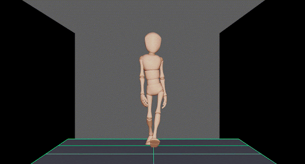

Animation
In my degree, Animation 3D was the subject in which I achieved my highest GPA, a 9.9 on the Spanish grading scale (0-10).
I have completed several exercises covering the fundamentals of both 2D and 3D animation.
Key exercises include the bouncing ball, pendulum, and walk cycle.
These projects helped me develop a strong foundation in animation principles.
Walk cycle
For the walk cycle exercises, I focused on creating realistic and fluid character movement by applying timing, weight, and balance principles.
I also experimented with different character personalities and walking styles to enhance the expressiveness and variety in animation.

Run cycle
For the run cycle exercises, I worked on sequences like running and jumping, as well as running and kicking, to capture fluid transitions and dynamic movement.
Kicks
In the run cycle with kicks, I focused on smooth transitions from running to kicking, ensuring both fluidity and impact.
Additionally, I animated a bouncing ball in sync with the kicks, emphasizing timing and interaction between the character and the ball.